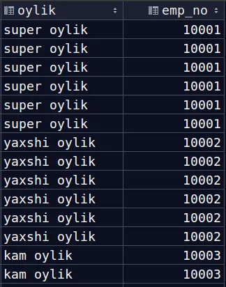

SELECT, ORDER BY buyrugʻiga va Aggregate funksiyalarga oid masalalar
-
"employees" jadvalidagi 2 ta ustunni ya`ni first_name va last_name ustunlarini nomini Ism va Familya
ko`rinishida
chiqaring
-
"salaries" jadvalidan foydalanib:
-o'rtacha oylik qanchaligini
-eng katta oylik qanchaligini
-eng kichik oylik qanchaligini aniqlang
-
2 ta so`rov yozing.
1-si so`rovingiz "employees" jadvalidan 10 ta jinsi erkak bo`lganlarni chiqarsin
2-si so`rovingiz "employees" jadvalidan 10 ta jinsi ayol bo`lganlarni chiqarsin
where ishlatilmasin.
-
"salaries" jadvalida oylik maoshlar haqida ma`lumot saqlanadi.
Eng ko`p oylik oladigan 10 ta employee ning, faqat employee nomerlarini chiqaring
-
"department" jadvalida nechta ma`lumot borligini chiqaring
-
"salaries" jadvalidan oyligi :
- 80000 dan katta bo`lganlarni "super oylik" deb
- 50000 dan katta va 80000 dan kam bo`lsa "yaxshi oylik" deb
- 50000 dan kam bo`lsa "kam oylik" deb ekranga chiqarsin. Xuddi rasmdagidek
